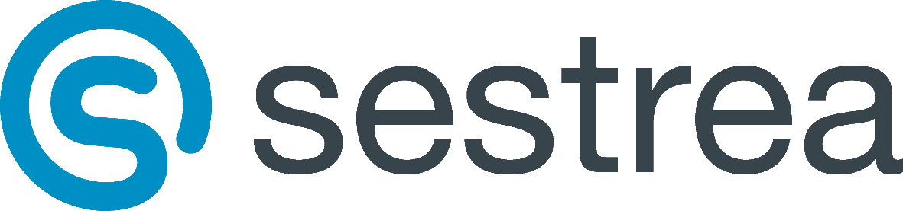
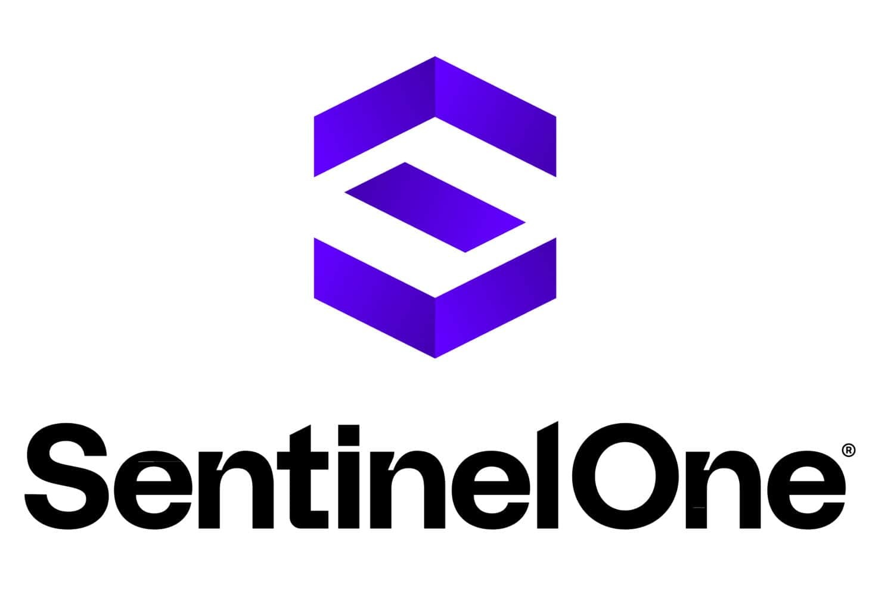
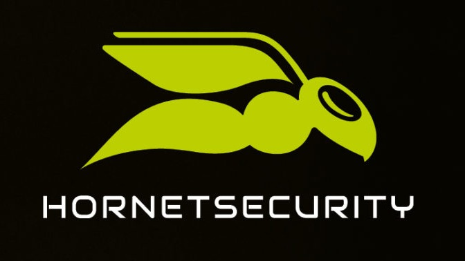

Mon entreprise : SESTREA
Chez SESTREA, je participe au support informatique et au suivi
d’infrastructures systèmes et réseaux.
Support & services informatiques
Environnement professionnel concret
Relation utilisateur
Carte d’identité de l’entreprise

Entreprise de services numériques orientée support, postes clients,
serveurs et relation utilisateur.
Les informations ci-dessous présentent le contexte général de l’entreprise.
Secteur et activités principales
Mon rôle d’alternant s’inscrit dans le support quotidien et la continuité
du service informatique.
- Support utilisateurs et gestion des tickets ;
- Préparation et suivi des postes clients ;
- Surveillance de serveurs et services ;
- Participation aux demandes et interventions techniques.
Valeurs et manière de travailler
Des points importants dans mon quotidien d’alternant.
Proximité avec les utilisateurs
Écouter, reformuler et accompagner les demandes.
Fiabilité et réactivité
Traiter les incidents et suivre les priorités.
Esprit d’équipe
Échanger avec les techniciens et administrateurs.
Objectifs et services clés
Les objectifs principaux : disponibilité, support fiable et suivi des demandes.
- Assurer un support utilisateur efficace (incident, demande, conseil) ;
- Maintenir les postes clients et les serveurs à jour ;
- Contribuer à la sécurisation du réseau et des données ;
- Accompagner la mise en place de nouvelles solutions techniques.
Outils utilisés
SESTREA s’appuie sur plusieurs solutions pour le support, la supervision,
l’administration et la sécurité.
Gestion support
- Incwo : demandes, tickets et échanges clients ;
- Swatch / NinjaOne : tickets, appareils et demandes support ;
- Microsoft 365 : comptes, cloud, messagerie et collaboration.
Supervision et réseau
- PRTG : équipements, serveurs et services ;
- Meraki : gestion et suivi réseau/cloud ;
- FortiCloud : administration d’équipements Fortinet.
Sécurité
- SentinelOne : EDR/XDR postes et serveurs ;
- Hornetsecurity : protection mail et services associés ;
- Solutions utilisées côté interne et client.


Types de contrats clients
Les contrats permettent d’adapter l’accompagnement au niveau de besoin du client.
CM
Contrat de maintenance général.
CM Infra
Contrat orienté réseau, serveurs et éléments d’infrastructure.
CM Intégral
Infrastructure, postes utilisateurs et tickets associés.
Contrat support
Intervention facturée selon un besoin ponctuel ou sur mesure.
Mes activités chez SESTREA
Des missions concrètes de support, de diagnostic, de postes clients,
de réseau et de documentation.
Support informatique
Réseau & systèmes
Mes principales missions
Une synthèse des activités réalisées en entreprise.
- Demandes utilisateurs : tickets, mails, téléphone ;
- Diagnostic et résolution d’incidents ;
- Interventions de premier niveau réseau et équipements ;
- Notes et procédures techniques.
Une journée type
9h · Démarrage
- Mails et demandes entrantes ;
- Prise de connaissance des tickets ;
- Repérage des priorités.
10h-13h · Support
- Permanence téléphonique ;
- Qualification des demandes ;
- Création ou mise à jour de tickets ;
- Surveillance serveurs/services.
Après-midi · Traitement
- Résolution des tickets ;
- Préparation ou configuration de postes ;
- Interventions extérieures possibles ;
- Dépôt ou installation de PC préparés.
Compétences développées : priorités, relation utilisateur, rigueur,
autonomie, diagnostic et résolution d’incidents.
Gestion des tickets
Les tickets servent à suivre les demandes, les échanges et les actions réalisées.
Incwo
- Demandes et échanges clients ;
- Qualification des incidents ;
- Suivi des informations support.
Swatch / NinjaOne
- Suivi des tickets ouverts ;
- Consultation des appareils ;
- Historique des actions support.
Support utilisateurs et postes clients
Installation et configuration
Objectif : fournir un poste prêt à l’emploi.
- Installation ou réinstallation ;
- Mises à jour et sécurité de base ;
- Raccordement réseau ou domaine ;
- Tests avec l’utilisateur ;
- Compétence : système, réseau, rigueur.
Dépannage et assistance
Objectif : rétablir un service ou guider l’utilisateur.
- Connexion, imprimantes, lenteurs, logiciels ;
- Analyse et reproduction du problème ;
- Application de procédures ;
- Escalade si nécessaire ;
- Compétence : support et relation utilisateur.
Réseau, systèmes et documentation
Contributions réseau et système
Objectif : participer à la disponibilité des services.
- Surveillance de l’état des serveurs et des sauvegardes ;
- Configuration d’équipements réseau ;
- Mises à jour et contrôles simples ;
- Compétence : systèmes, réseau, sécurité de base.
Documentation technique
Objectif : garder une trace claire des interventions.
- Rédaction ou mise à jour de procédures simples ;
- Notes pour les interventions récurrentes ;
- Captures d’écran et exemples de configuration ;
- Compétence : documentation et bonnes pratiques SISR.
Collaboration et apprentissages
Ces missions développent aussi des compétences professionnelles.
- Écoute et reformulation des besoins ;
- Travail avec techniciens et administrateurs ;
- Gestion du temps et des priorités ;
- Explication simple d’une action technique.
Objectif : expliquer une situation professionnelle avec méthode.